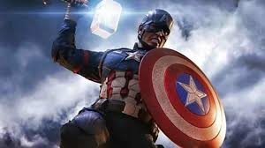

I like my world to be very imaginative and fun. My favourite characters make my world a very nice and fun by making movies that inspire me - not in philosophy,they just push me to be productive so that I can watch the movies! Some of my favourite characters are:
Captain America, from all the MCU movies.
Batman(only played by Ben Affleck)
Luke Skywalker(still have 5 or six movies to watch!)